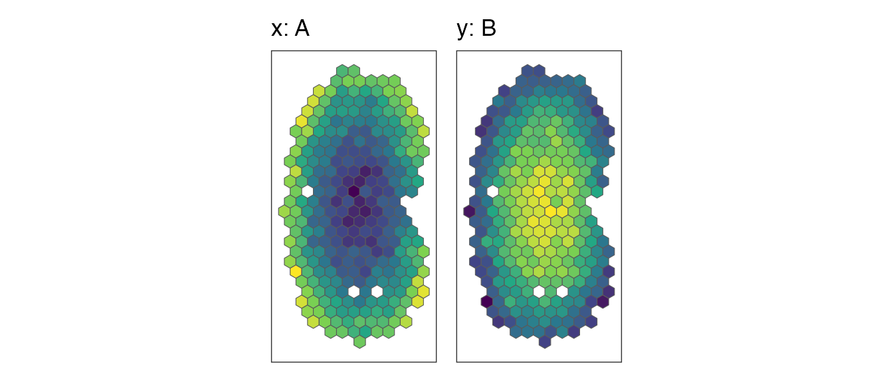
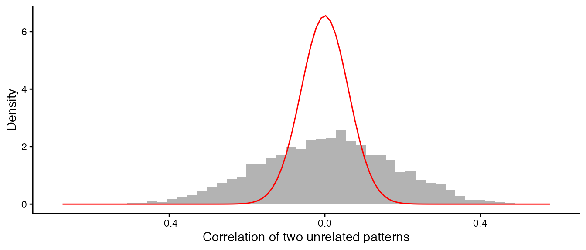
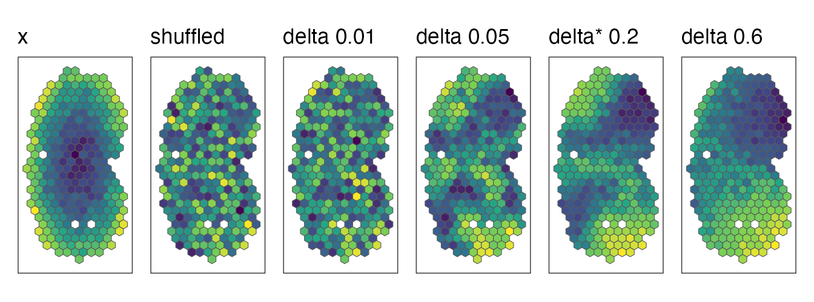
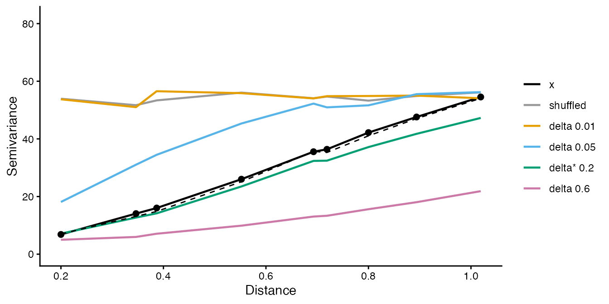
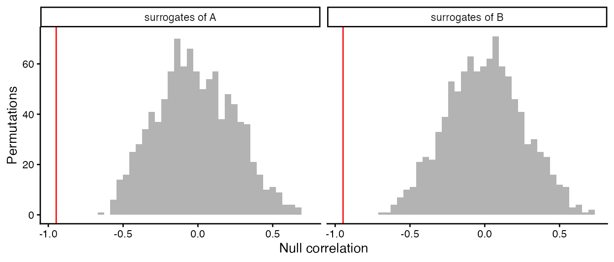
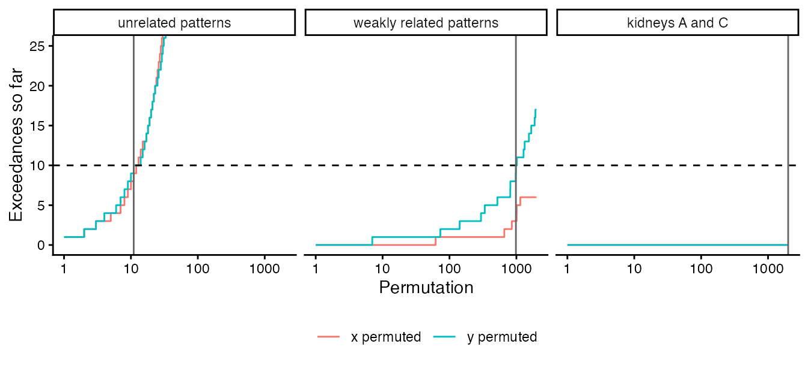
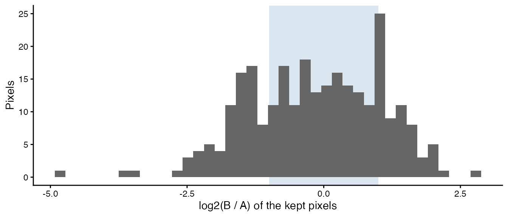

This article walks through what compareSpatial()
computes for one gene, step by step, with small examples from the data
that ship with the package:
- Matched pixels: the two samples are compared pixel by pixel.
- Pearson’s correlation, and why its usual p-value fails for spatial data.
- Spatially autocorrelated surrogates with the gene’s own values, which give a valid null distribution.
- Sequential permutation p-values that stop early when the answer is clear.
- Both directions, one p-value per gene and the adjustment for multiple testing.
- Rarely detected genes: why the surrogates take the gene’s own values.
- Spatial similarity: the expression levels at matched pixels.
library(STcompare)
library(SpatialExperiment)
library(ggplot2)
library(patchwork)
data(speKidney)
data(simRanPatternRasts)Matched pixels
STcompare compares the same locations in two samples. After the tissues are aligned, both samples are rasterized together onto one grid of pixels, here hexagons, so that a pixel name refers to the same location in both:
rast <- SEraster::rasterizeGeneExpression(speKidney, assay_name = "counts",
resolution = 0.2, fun = "mean",
square = FALSE)
shared <- intersect(colnames(rast$A), colnames(rast$B))
length(shared)
#> [1] 273For a gene, the comparison uses two vectors over the shared pixels:
its values in the first sample, x, and in the second,
y.
x <- assay(rast$A, "pixelval")["Gene", shared]
y <- assay(rast$B, "pixelval")["Gene", shared]
coords <- spatialCoords(rast$A)[shared, ]To draw maps of values on these pixels, we put them into a copy of
the rasterized object and use SEraster::plotRaster():
mapValues <- function(values, title) {
spe <- rast$A[, shared]
assay(spe, "pixelval") <- matrix(values, nrow = 1,
dimnames = list("Gene", shared))
SEraster::plotRaster(spe, plotTitle = title, showLegend = FALSE)
}
mapValues(x, "x: A") + mapValues(y, "y: B")
Pearson’s correlation, and why the naive p-value fails
The statistic is Pearson’s correlation of x and
y over the shared pixels:
cor(x, y)
#> [1] -0.9472813Its usual test, cor.test(), assumes that the pixels are
independent observations. In a tissue they are not: neighbouring pixels
have similar values, so a smooth pattern carries far less independent
information than its number of pixels suggests, and two unrelated smooth
patterns often have a sizeable correlation.
simRanPatternRasts holds 100 independently simulated,
spatially autocorrelated patterns on one grid. The correlations of all
4950 pairs of them are spread much more widely than the correlations of
independent pixels would be:
values <- lapply(simRanPatternRasts, function(s) assay(s, "pixelval")[1, ])
pairs <- utils::combn(length(values), 2)
pairR <- apply(pairs, 2, function(ij) {
common <- intersect(names(values[[ij[1]]]), names(values[[ij[2]]]))
c(r = cor(values[[ij[1]]][common], values[[ij[2]]][common]),
pixels = length(common))
})
r <- pairR["r", ]
pixels <- pairR["pixels", ]
# the p-value of cor.test() for each pair
naiveP <- 2 * pt(-abs(r) * sqrt((pixels - 2) / (1 - r^2)), df = pixels - 2)
n <- median(pixels)
ggplot(data.frame(r = r), aes(r)) +
geom_histogram(aes(y = after_stat(density)), bins = 50, fill = "grey70") +
stat_function(fun = function(r) dnorm(r, sd = 1 / sqrt(n - 3)),
colour = "red") +
labs(x = "Correlation of two unrelated patterns", y = "Density") +
theme_classic()
The red curve is the distribution of r for 273
independent pixels, with a standard deviation of 0.061; the observed
standard deviation is 0.171. The patterns behave as if they had about 37
independent observations rather than 273. As a result,
cor.test() gives p < 0.05 for 50% of these unrelated
pairs instead of 5%. STcompare therefore builds the null distribution of
r from surrogate patterns with the same spatial
autocorrelation.
A null distribution that keeps the spatial autocorrelation
STcompare uses the method of Viladomat et al. (2014). To test the
correlation of x with y, it generates
surrogates of x: random patterns that have the same spatial
autocorrelation as x, and the same values, but no relation
to y. Each surrogate is made in five steps.
1. Shuffle the values of x across the
pixels. This keeps the values but destroys the spatial pattern, and with
it the autocorrelation.
set.seed(1)
shuffled <- x[sample.int(length(x))]2. Smooth the shuffled values with a Gaussian kernel
whose window holds a share
of the pixels (a nearest-neighbour bandwidth). A small
gives a rough pattern and a large one a smooth pattern. The smoother is
the local-constant fit of
locfit::locfit(kern = "gauss", nn = delta), evaluated on
locfit’s adaptive tree, reimplemented in C++.
3. Match the variogram. The variogram
is half the mean squared difference between the values of two pixels at
distance
;
it describes how fast similarity decays with distance. STcompare
computes it up to the 25% quantile of the pixel distances
(maxDistPrctile; with more than 1000 pixels, on a random
subset of 1000 pixels, for speed), fits the variogram of x
as a linear function of the variogram of the smoothed values,
,
and forms the surrogate
,
where
is Gaussian noise. Rescaling matches the slope of the variogram and the
noise its intercept (the nugget).
4. Choose
.
Steps 2 and 3 are done for every
of the grid (delta, by default 0.01, 0.05 and 0.1 to 0.9),
and the
whose surrogate’s variogram is closest to the variogram of
x (smallest residual sum of squares), delta star, gives the
surrogate.
5. Remap the values. The smoothed, rescaled
surrogate has values that are close to normally distributed, whatever
the distribution of x. Its values are therefore replaced by
the values of x themselves, placed in the surrogate’s rank
order: the pixel with the smallest surrogate value gets the smallest
value of x, and so on (the amplitude adjustment of Theiler
et al. 1992; surrogate = "remap", the default). The
surrogate keeps the spatial arrangement of step 3 and has exactly the
distribution of values of x, zeros included. Rarely detected genes shows why this
matters; surrogate = "gaussian" skips this step and gives
the surrogates of the legacy functions.
The legacy function viladomatCorrelation() exposes the
surrogates of steps 1 to 4. With a single
it returns the surrogate for that bandwidth, and with the same seed it
starts from the same shuffle as above; step 5 is one line of R:
xyData <- cbind(x, y, coords)
grid <- c(0.01, 0.05, seq(0.1, 0.9, 0.1))
smoothed <- function(delta) {
viladomatCorrelation(xyData, delta = delta, maxDistPrctile = 0.25,
nPermutations = 1, seed = 1)
}
remap <- function(surrogate, values) {
remapped <- surrogate
remapped[order(surrogate)] <- sort(values)
remapped
}
deltaStar <- smoothed(grid)$deltaStar
deltaStar
#> [1] 0.2
shown <- unique(c(0.01, 0.05, deltaStar, 0.6))
gaussian <- lapply(shown, function(d) smoothed(d)$permutations[, 1])
fields <- c(list(x = x, shuffled = shuffled),
lapply(gaussian, remap, values = x))
names(fields)[-(1:2)] <- ifelse(shown == deltaStar, "delta* ", "delta ")
names(fields)[-(1:2)] <- paste0(names(fields)[-(1:2)], shown)
wrap_plots(Map(mapValues, fields, names(fields)), nrow = 1)
Every map has the same values, those of x, arranged
differently: shuffled, or smoothed with increasing bandwidths.
The variograms show why delta star is 0.2 for this surrogate. Delta
star is chosen in step 4, from the variograms of the smoothed, rescaled
surrogates; the remapping is a monotone change of the amplitudes, which
alters the variogram only a little, so the variograms of the remapped
surrogates tell the same story. We compute them with a small helper, in
equal distance bins up to the 25% quantile of the distances (STcompare’s
own computation follows geoR::variog()):
variogram <- function(values, coords, maxDist, nBins = 12) {
d <- as.matrix(dist(coords))
halfSq <- outer(values, values, function(a, b) (a - b)^2 / 2)
pair <- upper.tri(d) & d <= maxDist
bin <- cut(d[pair], seq(0, maxDist, length.out = nBins + 1))
v <- data.frame(distance = as.numeric(tapply(d[pair], bin, mean)),
semivariance = as.numeric(tapply(halfSq[pair], bin, mean)))
v[!is.na(v$distance), ]
}
maxDist <- quantile(dist(coords), 0.25)
curves <- do.call(rbind, Map(function(v, label) {
data.frame(variogram(v, coords, maxDist), field = label)
}, fields, names(fields)))
curves$field <- factor(curves$field, levels = names(fields))
target <- curves[curves$field == "x", ]
beforeRemap <- variogram(gaussian[[which(shown == deltaStar)]], coords, maxDist)
ggplot(curves, aes(distance, semivariance, colour = field)) +
geom_line(linewidth = 0.8) +
geom_line(data = beforeRemap, colour = "black", linetype = "dashed") +
geom_point(data = target, colour = "black", size = 2) +
coord_cartesian(ylim = c(0, 1.5 * max(target$semivariance))) +
scale_colour_manual(values = c("black", "grey60",
"#E69F00", "#56B4E9", "#009E73", "#CC79A7")) +
labs(x = "Distance", y = "Semivariance", colour = NULL) +
theme_classic()
The variogram of x (black points) rises with distance:
nearby pixels are similar. The shuffled values have a flat variogram. A
small bandwidth leaves a rough pattern whose variogram rises too fast
and flattens, a large one an over-smoothed pattern whose variogram rises
too slowly, and delta star follows the variogram of x
closely, before the remapping (dashed) and after it.
6. Null correlations. The correlation of each
surrogate of x with y is one draw from the
null distribution of r. The same is done in the other
direction, with surrogates of y correlated with
x. keepNulls = TRUE keeps these null
correlations:
ab <- compareSpatial(rast[c("A", "B")], nPermutations = 999, nThreads = 2,
keepNulls = TRUE)
#> compareSpatial: 1 gene on 273 shared pixels in 0.2 s (999 permutations in total, 2 threads)
nulls <- attr(ab, "details")$Gene
ggplot(data.frame(r = c(nulls$nullX, nulls$nullY),
direction = rep(c("surrogates of A", "surrogates of B"),
each = length(nulls$nullX))), aes(r)) +
geom_histogram(bins = 40, fill = "grey70") +
geom_vline(xintercept = ab$correlationCoef, colour = "red") +
facet_wrap(~direction) +
labs(x = "Null correlation", y = "Permutations") +
theme_classic()
The observed correlation of A and B (red line) lies far outside both null distributions. The nulls are wide, because unrelated smooth patterns can correlate strongly, but -0.95 is out of their reach.
Sequential p-values: stop early when the answer is clear
With permutations, the permutation p-value of a direction is , where counts the null correlations at least as extreme as the observed one, . The smallest possible value is , so a small p-value needs many permutations; a large p-value does not. After 30 permutations with 15 exceedances, a gene is clearly not significant, and 10,000 more permutations would only refine an uninteresting number.
compareSpatial() therefore uses the sequential rule of
Besag and Clifford (1991): a gene draws permutations until
exceedances
(,
10 by default) null correlations are at least as extreme as the observed
one, or until nPermutations
(,
10,000 by default). Its p-value is
- if the -th exceedance came at permutation , and
- , the usual value, if it reached with exceedances.
Besag and Clifford showed that stopping early costs no validity: if the observed correlation is distributed like the null correlations, as it is when the null hypothesis is true and the surrogates reproduce the null distribution, for every , as for a fixed number of permutations, so it can be adjusted for multiple testing like any other p-value. (Where the surrogates do not reproduce the null distribution, as surrogates without step 5 do not for rarely detected genes, no number of permutations helps; see Rarely detected genes.) Its relative precision is about (about 30% for ), which is ample for p-values that are far from significance, while significant genes still get the full resolution of permutations. An unrelated gene costs on average about permutations, around 80 for the defaults.
The figure follows three comparisons permutation by permutation: two
unrelated patterns, a weakly correlated pair made by mixing two of the
simulated patterns, and kidneys A and C. We run 2000 permutations of
each without stopping (exceedances = Inf) and count the
exceedances as they accumulate.
f1 <- simRanPatternRasts[[9]]
f2 <- simRanPatternRasts[[10]]
px <- intersect(colnames(f1), colnames(f2))
z1 <- as.numeric(scale(assay(f1, "pixelval")[1, px]))
z2 <- as.numeric(scale(assay(f2, "pixelval")[1, px]))
mixed <- f2[, px]
assay(mixed, "pixelval") <- matrix(0.3 * z1 + sqrt(1 - 0.3^2) * z2, nrow = 1,
dimnames = list(rownames(f2), px))
examples <- list(
"unrelated patterns" = list(simRanPatternRasts[[1]], simRanPatternRasts[[2]]),
"weakly related patterns" = list(f1[, px], mixed),
"kidneys A and C" = rast[c("A", "C")])
fixed <- lapply(examples, function(e) {
compareSpatial(e[[1]], e[[2]], tests = "correlation", nPermutations = 2000,
exceedances = Inf, keepNulls = TRUE, nThreads = 2,
verbose = FALSE)
})
running <- do.call(rbind, Map(function(res, label) {
nl <- attr(res, "details")[[1]]
rbind(data.frame(b = seq_along(nl$nullX), direction = "x permuted",
exceedances = cumsum(abs(nl$nullX) >= abs(res$correlationCoef)),
example = label),
data.frame(b = seq_along(nl$nullY), direction = "y permuted",
exceedances = cumsum(abs(nl$nullY) >= abs(res$correlationCoef)),
example = label))
}, fixed, names(fixed)))
running$example <- factor(running$example, levels = names(examples))
adaptive <- lapply(examples, function(e) {
compareSpatial(e[[1]], e[[2]], tests = "correlation", nPermutations = 2000,
nThreads = 2, verbose = FALSE)
})
stops <- data.frame(example = factor(names(adaptive), levels = names(examples)),
L = sapply(adaptive, function(res) res$nPermutations))
ggplot(running, aes(b, exceedances, colour = direction)) +
geom_step() +
geom_hline(yintercept = 10, linetype = "dashed") +
geom_vline(data = stops, aes(xintercept = L), colour = "grey40") +
scale_x_log10() +
coord_cartesian(ylim = c(0, 25)) +
facet_wrap(~example) +
labs(x = "Permutation", y = "Exceedances so far", colour = NULL) +
theme_classic() +
theme(legend.position = "bottom")
The dashed line is
,
and the grey line marks where the adaptive run stopped
(nPermutations of the adaptive result). The unrelated
patterns reach 10 exceedances after 11 permutations and the weakly
related pair after 984; kidneys A and C never exceed and run to the
limit:
data.frame(example = names(adaptive),
correlationCoef = sapply(adaptive, function(res) round(res$correlationCoef, 3)),
nPermutations = sapply(adaptive, function(res) res$nPermutations),
stop = sapply(adaptive, function(res) res$stop),
pValuePermute = sapply(adaptive, function(res) signif(res$pValuePermute, 3)),
row.names = NULL)
#> example correlationCoef nPermutations stop
#> 1 unrelated patterns -0.042 11 exceedances
#> 2 weakly related patterns 0.384 984 exceedances
#> 3 kidneys A and C 0.943 2000 limit
#> pValuePermute
#> 1 0.9090
#> 2 0.0102
#> 3 0.0005Because each permutation’s random numbers depend only on the seed, the gene and the permutation number, the adaptive run computed exactly the first permutations of the fixed run: it is the same experiment, stopped early.
Two directions, one p-value
Surrogates of x keep the autocorrelation of
x but not of y, and the reverse for surrogates
of y. STcompare runs both directions on the same
permutation numbers, in lockstep, and stops a gene as soon as either
direction reaches
exceedances. The gene’s p-value, pValuePermute, is the
larger of the two directions’ sequential p-values:
- if one direction reached
exceedances at permutation
,
pValuePermuteis (the other direction, had it continued alone, could only have given a smaller value); - otherwise
pValuePermuteis .
The larger of two valid p-values is itself valid, whatever the
dependence between them, so pValuePermute needs no
assumption about how the two directions relate. Taking the larger value
formalizes the rule of the original analyses, which called a gene
significant when both directions were. pValuePermuteX and
pValuePermuteY,
for each direction at the common
,
are descriptive: they are not adjusted, and when a gene stops early, the
direction that did not reach
has an inflated value. (The legacy
spatialCorrelationGeneExp() returns the same two raw
columns for a fixed number of permutations, each adjusted across genes
in pValuePermuteXAdj and pValuePermuteYAdj,
and no combined p-value.)
Across the genes of a call, pValuePermuteAdj adjusts
pValuePermute for multiple testing (Benjamini-Hochberg by
default). With
genes, the
-th
smallest p-value must be at most
,
so the smallest possible p-value,
,
matters when few genes are significant among many: see Parameters,
performance and reproducibility.
Rarely detected genes
Step 5 exists because of genes detected in a handful of pixels.
Without it, the surrogates are smoothed and mixed with Gaussian noise,
so their values are close to normally distributed
(surrogate = "gaussian", the surrogates of the legacy
functions and of the published analyses). That suits a gene expressed
over much of the tissue, but not a gene detected in a handful of pixels:
the correlation of two such genes is decided by the few pixels where
both are detected. Two unrelated genes that happen to share a detected
pixel have a large correlation, and such coincidences happen far more
often than the nearly normal values of gaussian surrogates produce
extreme correlations. For example, two unrelated genes on the pixels of
kidneys A and B, each detected in 3 pixels, one of which they share:
withValues <- function(values) {
spe <- rast$A[, shared]
assay(spe, "pixelval") <- matrix(values, nrow = 1,
dimnames = list("Gene", shared))
spe
}
sparseX <- sparseY <- numeric(length(shared))
sparseX[c(10, 100, 200)] <- c(3, 8, 5)
sparseY[c(100, 150, 250)] <- c(6, 2, 4)
sparse <- list(withValues(sparseX), withValues(sparseY))
gaussian <- compareSpatial(sparse, tests = "correlation", nPermutations = 999,
surrogate = "gaussian", minDetected = 0,
nThreads = 2, verbose = FALSE)
as.data.frame(gaussian)[, c("correlationCoef", "pValuePermute", "nPermutations")]
#> correlationCoef pValuePermute nPermutations
#> Gene 0.6445649 0.001 999None of the 999 gaussian surrogate pairs comes close to this correlation, so p is the smallest possible value. These genes have no spatial pattern, so shuffling the pixels of one of them gives the exact null distribution, and it shows how often such a coincidence happens by chance:
set.seed(2)
shuffled <- replicate(1e5, cor(sample(sparseX), sparseY))
exact <- mean(abs(shuffled) >= abs(gaussian$correlationCoef) * (1 - 1e-9))
exact
#> [1] 0.00333(The tolerance counts the shuffles that give exactly the observed
correlation, which cor() rounds differently for each
arrangement of the values.) A correlation this large happens by chance
about once in 300 shuffles, so the gaussian surrogates’ p-value, 0.001,
is 3 times too small; with the default
nPermutations = 10000 it would be 33 times too small.
Remapped surrogates have the gene’s own values. For a gene without
spatial structure the ranks of its surrogates are close to random, so
its remapped surrogates are nearly plain shuffles of its values, and the
test is close to the exact permutation test above, whatever the gene’s
distribution. The defaults give a p-value of the right size:
remapped <- compareSpatial(sparse, tests = "correlation", nThreads = 2,
verbose = FALSE)
c(remapped = remapped$pValuePermute, exact = exact)
#> remapped exact
#> 0.008216927 0.003330000The remapped gene stopped after 1217 permutations with 10
exceedances, so its p-value is 10 / 1217, where the exact value predicts
4.1 exceedances. The remapped p-value errs on the safe side: the
surrogate of a gene without spatial structure keeps a little smoothness,
because the variogram matching takes the absolute value of a slope that
is pure noise, so its null correlations are spread slightly more widely
than those of plain shuffles. (Many rearrangements of a sparse gene give
exactly the observed correlation; as in the exact test, such ties count
as exceedances, within the rounding of cor().)
With gaussian surrogates, compareSpatial() does not test
genes detected in fewer than
of the
shared pixels of either sample (argument minDetected), here
17 of 273 pixels: the departure from the surrogates grows roughly as
for genes detected in
and
pixels, and the filter removes the genes for which it is largest,
although genes detected in more pixels but still mostly zero can get
p-values that are somewhat too small.
skipped <- compareSpatial(sparse, tests = "correlation", surrogate = "gaussian",
nThreads = 2, verbose = FALSE)
as.data.frame(skipped)[, c("pValuePermute", "status", "message")]
#> pValuePermute status
#> Gene NA skipped
#> message
#> Gene detected in 3 (x) and 3 (y) of the 273 shared pixels; minDetected asks for 17 in each: not testedWith remapped surrogates, the default, no such filter is needed. In
simulations on the pixels of the kidney and brain case studies, remapped
surrogates kept
for independent genes detected in anywhere from 1% to 100% of the
pixels, where gaussian surrogates were anti-conservative below about
10%, and they had the same power on correlated fields
(bench/calibration-results.md in the source repository).
minDetected therefore defaults to 0 with remapped
surrogates: every gene that is not constant in a sample is tested, a
gene without spatial structure costs about ten permutations, and the
remapping itself, one sort of the
values per surrogate, adds about 7% to the run time.
Spatial similarity
The correlation compares patterns and ignores the levels. The spatial similarity compares the levels at matched pixels. For each gene:
-
Threshold. The threshold of each sample is the
gene’s
minQuantilequantile (5% by default) over the shared pixels. A pixel is kept when its value is above the threshold in either sample: pixels where the gene is barely expressed in both samples would otherwise count as similar. - Log ratio. On the kept pixels, zeros are replaced by and .
-
Classify. A pixel is similar if
foldChange(1 by default, within two-fold), higher inxif-foldChange, and higher inyiffoldChange. -
Score.
percentSimilarityis the share of similar pixels among the kept pixels, andpercentDissimilarityXandpercentDissimilarityYthe shares of the other two classes (all three are proportions between 0 and 1, despite their names). If fewer than a shareminPixels(10%) of the pixels are kept, the scores areNA.
These steps take a few lines of R for kidneys A and B, and give the
value reported by compareSpatial():
keep <- x > quantile(x, 0.05) | y > quantile(y, 0.05)
x0 <- ifelse(x == 0, 1e-4, x)
y0 <- ifelse(y == 0, 1e-4, y)
l <- log2(y0[keep] / x0[keep])
c(byHand = mean(abs(l) <= 1), compareSpatial = ab$percentSimilarity)
#> byHand compareSpatial
#> 0.5347985 0.5347985
ggplot(data.frame(l = l), aes(l)) +
annotate("rect", xmin = -1, xmax = 1, ymin = -Inf, ymax = Inf,
fill = "steelblue", alpha = 0.2) +
geom_histogram(bins = 40, fill = "grey40") +
labs(x = "log2(B / A) of the kept pixels", y = "Pixels") +
theme_classic()
The shaded band holds the similar pixels. The similarity is a description of the data and has no p-value. Because it compares levels, it needs values on a linear scale that are comparable between the samples (for example counts per million), not log-transformed values.
Summary
For each gene, compareSpatial():
- takes the gene’s values on the pixels shared by the two samples, and skips the correlation test if the gene is constant in a sample (or, with gaussian surrogates, detected in too few pixels);
- computes Pearson’s correlation,
correlationCoef(and, for reference, the naivepValueNaive); - draws surrogates of each sample that keep its spatial autocorrelation (shuffle, smooth with each , match the variogram, keep delta star) and its values (remap), and correlates them with the other sample;
- stops when either direction has
exceedancesnull correlations at least as extreme as the observed correlation, or atnPermutations, and reports the larger of the two directions’ sequential p-values aspValuePermute(pValuePermuteXandpValuePermuteYhold for each direction); - adjusts
pValuePermuteacross genes (pValuePermuteAdj); - computes the similarity of the levels at the kept pixels.
All genes share the expensive parts that depend only on the pixel
coordinates (the smoothing operators and the variogram bins), and the
permutations run on nThreads threads.
References
- Clifton K, Jiang V, dos Santos Peixoto R, Singh S, Matsuura R, Rabb H, Fan J (2026). STcompare: comparative spatial transcriptomics data analysis of structurally matched tissues to characterize differentially spatially patterned genes. Bioinformatics 42(9):btag644. doi:10.1093/bioinformatics/btag644
- Viladomat J, Mazumder R, McInturff A, McCauley DJ, Hastie T (2014). Assessing the significance of global and local correlations under spatial autocorrelation: a nonparametric approach. Biometrics 70(2):409-418. doi:10.1111/biom.12139
- Theiler J, Eubank S, Longtin A, Galdrikian B, Farmer JD (1992). Testing for nonlinearity in time series: the method of surrogate data. Physica D 58(1-4):77-94. doi:10.1016/0167-2789(92)90102-S
- Besag J, Clifford P (1991). Sequential Monte Carlo p-values. Biometrika 78(2):301-304. doi:10.1093/biomet/78.2.301
- Benjamini Y, Hochberg Y (1995). Controlling the false discovery rate: a practical and powerful approach to multiple testing. Journal of the Royal Statistical Society B 57(1):289-300. doi:10.1111/j.2517-6161.1995.tb02031.x